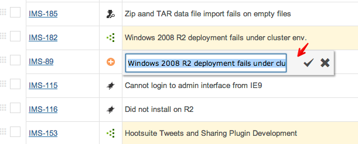
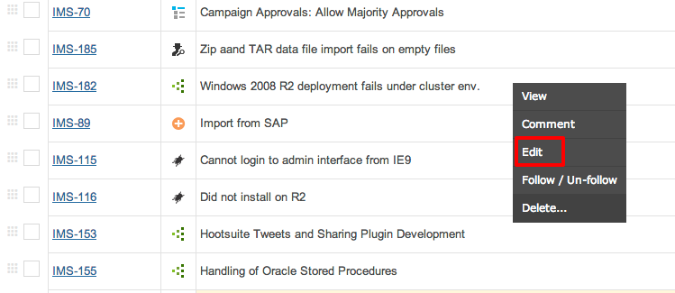
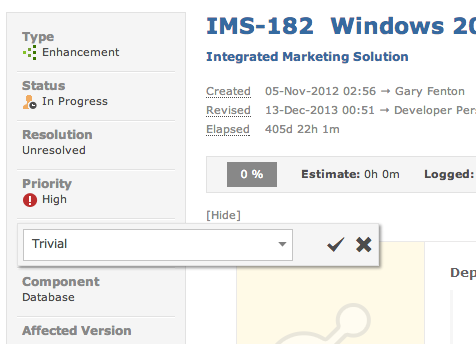
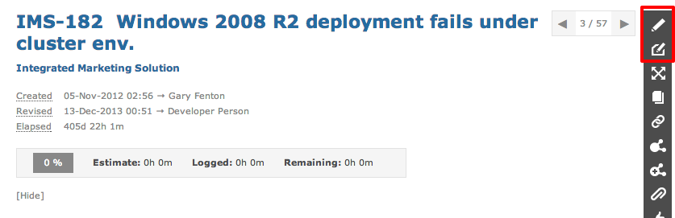

There are various ways to edit an item to change it's attributes and state.
When viewing items on the grid you can left-click to edit that field as well as other fields.

Or you can right-click on an item and select Edit from the context menu.

You can left-click on any field to edit it's value.

You can also click on the Edit icon to change field values.
